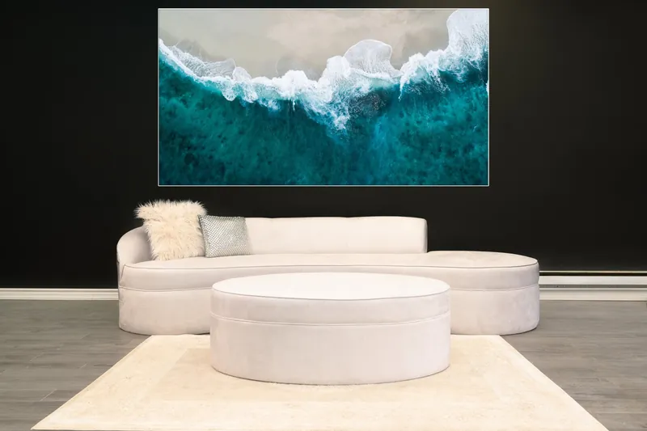
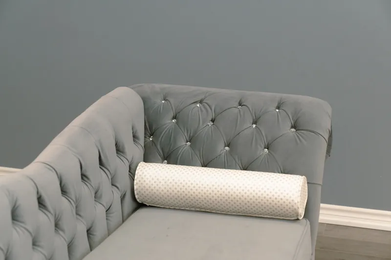

Custom furniture, made in Mississauga for Toronto & the GTA
Custom sofas, sectionals, beds and restaurant booths, handcrafted to your size, fabric and colour at wholesaler prices.
Shop by category
Every piece is made to order. Start with a style you love, then make it yours.



Made in Canada
Welcome to Modern Furniture Gallery — Mississauga's trusted destination for custom Canadian-made furniture. With over 25 years of experience, we have proudly served homeowners and businesses across the GTA with handcrafted, premium-quality modern furniture.
Every piece is built right here in Canada using only premium materials. We specialize in fully custom furniture tailored to your exact dimensions, fabric, and colour. Whether you're furnishing a living room, bedroom, or commercial space — we bring your vision to life.


Restaurant booths trusted across the GTA
Many popular restaurants and restaurant chains across the GTA use booths we built. You'll find our booths, banquettes and commercial seating in restaurants, cafés, bars, lounges and entertainment venues from Mississauga and Brampton to Toronto, Vaughan and Oakville, all designed and manufactured in Mississauga and built tough for high-traffic dining rooms.
- Single & double booths
- L-shaped & U-shaped booths
- Curved banquettes
- Wall benches & straight runs
- Commercial-grade vinyl & leather
- Booth reupholstery
Wholesaler Pricing
Browse our collections of custom sofas, sectionals, beds, chairs, ottomans, and more — all crafted from premium materials at factory-direct wholesaler prices. No middleman. No retail markup. Just exceptional Canadian-made furniture delivered to you at the best possible price.
Browse Collections
How custom works
From the first visit to delivery, we keep it simple.
Visit or call
Come to our Mississauga showroom or call us to talk through your space, style and budget.
Choose your design
Pick the style, size, shape, fabric or leather and colour. Every detail is made to order.
We build it in Mississauga
Your piece is handcrafted in Canada from premium materials, most within 1–3 weeks.
Delivered to your door
We deliver across Toronto, the GTA and Ontario, ready to enjoy.
Why Choose Modern Furniture Gallery?
Made in Canada
Every piece is crafted locally in Canada. Serving the GTA for 25+ years.
Fully Custom
Choose your fabric, colour, size, and style. Your furniture is built exactly to your specifications.
Wholesaler Prices
We sell factory-direct with no retail markup. Get premium Canadian furniture at prices you won't find anywhere else in the GTA.
Reupholstery Services
Love your furniture but not the fabric? We reupholster your existing pieces using premium materials — giving your favourite sofa, chair, or headboard a brand new look at a fraction of the cost of replacing it.
Commercial Furniture
We specialize in custom restaurant booths and commercial seating used by businesses across the GTA. Built tough for high-traffic environments, our commercial pieces are fully custom in any leather, fabric, or colour to match your brand.
Delivery Across Ontario
Wherever you are in Ontario, we deliver. From Toronto and the GTA to Ottawa, Hamilton, London, and beyond — we bring your custom furniture directly to your door.
What Our Customers Say
Reviews from homeowners and businesses across the GTA.
Custom Furniture Manufacturer in Toronto & the GTA
Modern Furniture Gallery designs and builds high-end custom furniture in Mississauga for homes and businesses across Toronto and the Greater Toronto Area. Choose any size, shape, fabric, leather and colour for your custom sofa, custom sectional, custom bed, accent chairs or ottomans, then see and feel the materials in our showroom.
We also manufacture custom restaurant booths, banquettes and commercial seating. Many popular restaurants and restaurant chains across the GTA use booths we built, and we reupholster existing furniture and booths too.
Serving Mississauga, Toronto, Brampton, Oakville, Etobicoke, Vaughan, Milton, Burlington, North York, Scarborough, Markham, Richmond Hill and all of Ontario.
- Custom SofasTufted, curved, channel-stitch and velvet sofas made to order
- Custom SectionalsModular and chaise sectionals sized to your room
- Custom BedsUpholstered and tufted beds and headboards
- Restaurant BoothsCustom booths and banquettes for restaurants, bars and cafés
- Accent Chairs & OttomansWingback, barrel and swivel chairs, ottomans and storage
- ReupholsteryNew life for sofas, chairs and commercial booths
Frequently Asked Questions
Where is Modern Furniture Gallery located?
We are located at 7025 Tomken Rd #19, Mississauga, ON L5S 1R6, easily accessible from Brampton, Toronto, Oakville, and across the GTA.
How long does it take to make custom furniture?
Most custom pieces are completed within 1–3 weeks depending on the design and fabric selected. Contact us for a more precise timeline on your specific order.
Can I choose my own fabric and colour?
Absolutely. Every piece is fully customizable. Visit our Mississauga showroom to browse our full selection of fabrics, leathers, and colours — or contact us to discuss your vision.
Do you offer wholesaler pricing to the public?
Yes! We sell directly to the public at wholesaler prices with no retail markup. You get factory-direct quality Canadian-made furniture at the best prices in the GTA.
What areas do you serve?
We serve all of the Greater Toronto Area including Mississauga, Brampton, Toronto, Etobicoke, Oakville, Vaughan, and surrounding areas.
Do you make custom sofas and sectionals?
Yes. Custom sofas and custom sectionals are made to order in Mississauga: tufted, channel-stitch, curved, modular and chaise designs built to your exact size, fabric, leather and colour. See our custom sofas and sectionals.
Do you make custom beds?
Yes. We build custom upholstered and tufted beds and headboards in the fabric, colour and size you choose. See our custom beds.
Do you build restaurant booths for restaurants and chains?
Yes. Custom restaurant booths and commercial seating are our specialty. Many popular restaurants and restaurant chains across the GTA use booths we built. See our restaurant booths.
Do you reupholster furniture and restaurant booths?
Yes. We reupholster sofas, chairs, headboards and commercial booths and banquettes across Toronto and the GTA, often for a fraction of the cost of replacing them.
Is your furniture high-end?
Every piece is handcrafted in Canada from premium materials and built to order, so you get high-end, designer-quality custom furniture at factory-direct wholesaler prices.
Visit our Mississauga showroom
See the fabrics, leathers and finishes in person, sit on our pieces, and get a quote for your custom sofa, sectional, bed or restaurant booths.
7025 Tomken Rd #19
Mississauga, ON L5S 1R6
| Monday | 10 a.m. – 8 p.m. |
| Tuesday | 10 a.m. – 8 p.m. |
| Wednesday | 10 a.m. – 8 p.m. |
| Thursday | 10 a.m. – 8 p.m. |
| Friday | 10 a.m. – 8 p.m. |
| Saturday | 11 a.m. – 8 p.m. |
| Sunday | 12 p.m. – 6 p.m. |